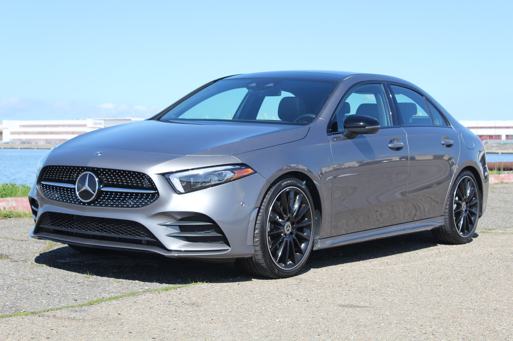
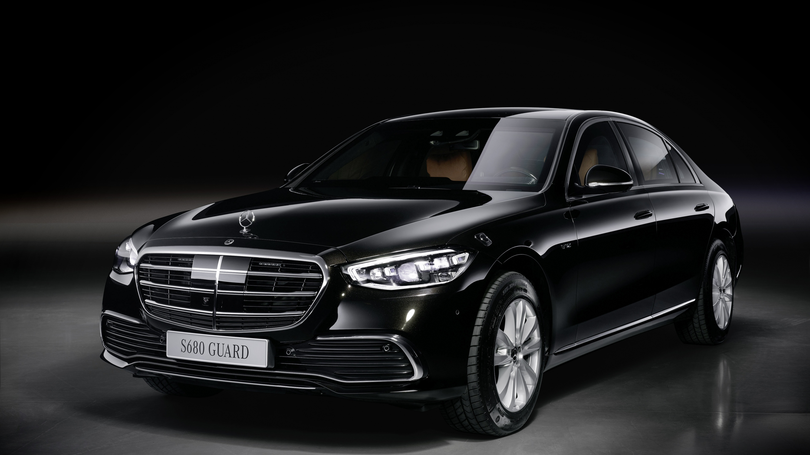

Mercedes-Benz C - Class
Produced since 1996, the C-Class is Mercedes Benz most compact model. Starting as a tall compact car before changing into a more familiar and sophisticated hatchback in its third generation, which came along in 2012. You can also get the A-Class in a saloon more recently, too.

- Year: 2024
- Engine: 1.3L Turbo
- Horsepower: 163 HP
- Transmission: Automatic
- Fuel Type: Petrol
- Top Speed: 225 km/h
Popular Mercedes-Benz A-Class Models

A-Class Sedan

A-Class Hatchback